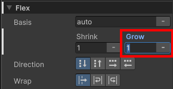
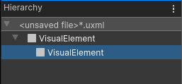
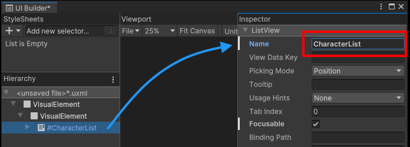
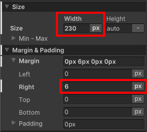
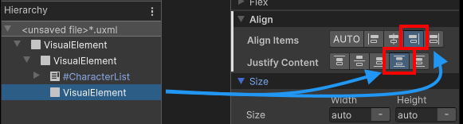
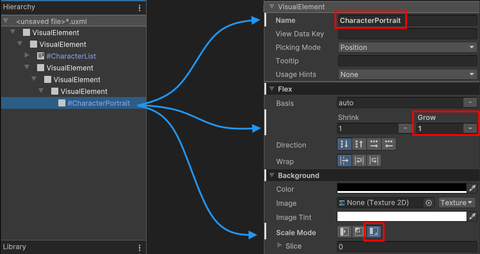
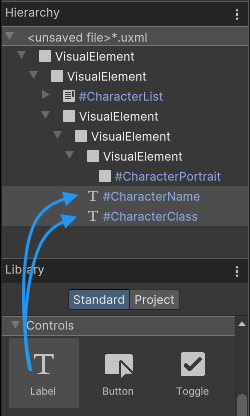
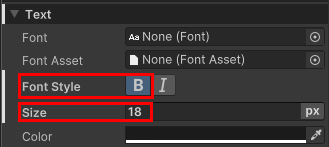

This example creates the main view for the Create a list view runtime UI example. It creates a root element as the background, with two containers. One container holds the character name list and another holds the character details. In the character details container, you add background and foreground frames. Finally, you add two labels for the character name. This example won’t create the character name list entry UI.
Final main view layout
Create the root element
Create a new project and then create a root visual element that covers the entire screen. Set your root element to have a background color and center all child elements in the middle of the screen.
Create a project in Unity with any template.
Select Window > UI Toolkit > UI Builder.
In the UI Builder window, at the top left of the Viewport window, select File > New to create a new UXML document.
UI Builder file menu
Name it as MainView.uxml and save.
Drag VisualElement from Library into the Hierarchy window.
Create new elements by dragging from the Library
Tip: You can also double-click a control to add it to the Hierarchy window.
Select the element from the Hierarchy window.
In the Inspector window, set Flex > Grow to 1. This sets the flex-grow property to 1, making it cover the entire screen.

Set the Flex property
To center all child elements, set both Align Items and Justify Content to Center.
Center children
Set Background > Color to #732526.
Root element background color
Create the parent container
Create a new VisualElement underneath the root element. This element becomes the parent container for the left and right sections of the UI.
Drag VisualElement from Library to the root VisualElement in the Hierarchy window.

Add a child VisualElement
Select the element from the Hierarchy window.
In the Inspector window, set Flex > Direction to row.
Set Size > Height to 350 pixels.
Center container properties
Create the character names list container
Add a ListView as the child element of the container to hold the character names.
Drag a ListView from the Library to the container VisualElement in the Hierarchy window.
Select the element from the Hierarchy window.
In the Inspector window, set Name to CharacterList.

Background container with the empty element inside
Set Size > Width to 230 pixels.
Set Margin & Padding > Margin > Right to 6 pixels.

Size and Margin foldouts for the character list
Set Background > Color to #6E3925.
Set Border > Color to #311A11.
Set Border > Width to 4 pixels.
Set Border > Radius to 15 pixels.
Styled character list
Create the character details container
Add a new VisualElement under the same parent as the #CharacterList to hold the character details container. The purpose is that when the user selects a character from the list on the left, it displays the character’s portrait, name, and class.
Drag a VisualElement from the Library to the container element in the Hierarchy window. This is the container to hold all the elements on the right.
Select the element from the Hierarchy window.
In the Inspector window, set Align > Align Items to flex-end.
Set Align > Justify Content to space-between.

Justify content property
Add another VisualElement as the child of the right container.
Select the element from the Hierarchy window.
Set Size > Width to 276 pixels.
In the Align section, set both Align Items and Justify Content to center.
Set Margin & Padding > Padding to 8 pixels.
Properties of the character details container
Set Background > Color to #AA5939.
Set Border > Color to #311A11.
Set Border > Width to 4 pixels.
Set Border > Radius to 15 pixels.
Your UI layout should now look like the following:
Empty character details panel
Create the character portrait background
Add the individual UI controls to the character details container. The first step is to add the character portrait background.
Drag VisualElement from Library to the character details container.
Select the element from the Hierarchy window.
In the Size section, set both Width and Height to 120 pixels.
Set Margin & Padding > Padding to 4 pixels.
Set Background > Color to #FF8554.
Background frame for the character portrait
Create a USS class for the border style
The character details container will use the same border styles as the character names list container. Create a USS class to apply to both containers.
In the StyleSheet window, select + > Create New USS.
Name it as MainView.uss and save.
Click on the Add new selector… field and enter .border. A .border selector appears in the StyleSheet window.
In the StyleSheet window, select .border.
In the Inspector window, set Border > Color to #311A11.
Set Border > Width to 2 pixels.
Set Border > Radius to 15 pixels.
Drag .border from the StyleSheet window to the character details container VisualElement.
Drag .border from the StyleSheet window to the character names list container VisualElement.
Select the character names list container VisualElement.
In the Inspector window, right-click Border and select Unset to remove the inline style you set earlier.
Create the character portrait foreground
Next in the character details container is to add the foreground for an actual image.
Drag VisualElement from Library to the character details container.
Select the element from the Hierarchy window.
Set Name to CharacterPortrait.
Set Flex > Grow to 1, so that the image can use all the available space.
Set Background > Scale Mode to scale-to-fit, so that you can scale the image to match the element size while keeping the correct aspect ratio.

VisualElement for the portrait image
Create labels
Add two label controls to the character details container to display the selected character’s name and class.
Drag Label from Library to the character details container in the Hierarchy window.
Set Name to CharacterName.
Drag Label from Library to the character details container in the Hierarchy window.
Set Name to CharacterClass.

Add labels for name and class
Select the #CharacterName element.
Set Text > Font Style to B.
Set Text > Size to 18 pixels.

Change font settings
In the Viewport window, select File > Save to save the changes to MainView.uxml.
Extract inline styles
In UI Builder, you can create elements and use inline styles only to experiment while the number of elements is still small. As you build a more complex UI, it’s easier to manage styles using style sheets. You can extract inline styles to a style sheet in UI Builder.
Select the root visual element.
In the Inspector window, in the Style Class List field, enter .background as the class name.
Select Extract Inlined Styles to New Class. This creates a .background class selector with the inline styles you set for the root element and updates the UI Document (UXML) for the root visual element to use the class selector instead of the inline styles.
In the Viewport window, select File > Save.
If you want to continue to work on the Create a list view runtime UI example, you can repeat the steps to extract styles for all the other elements, and follow the instructions to create the example.